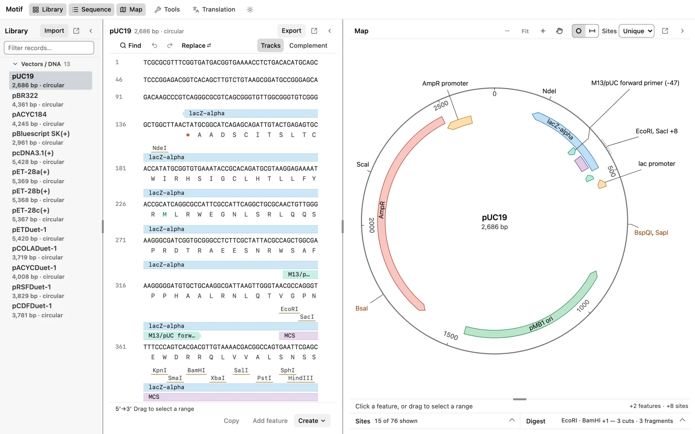
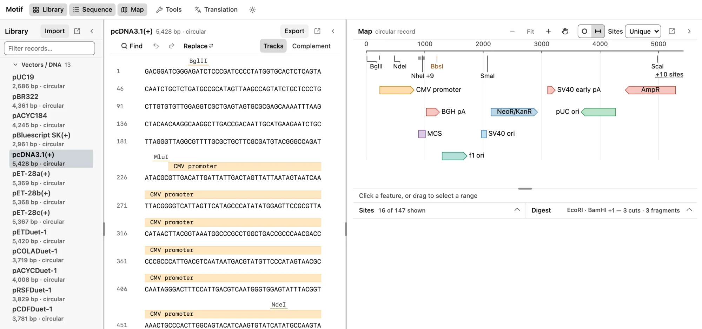
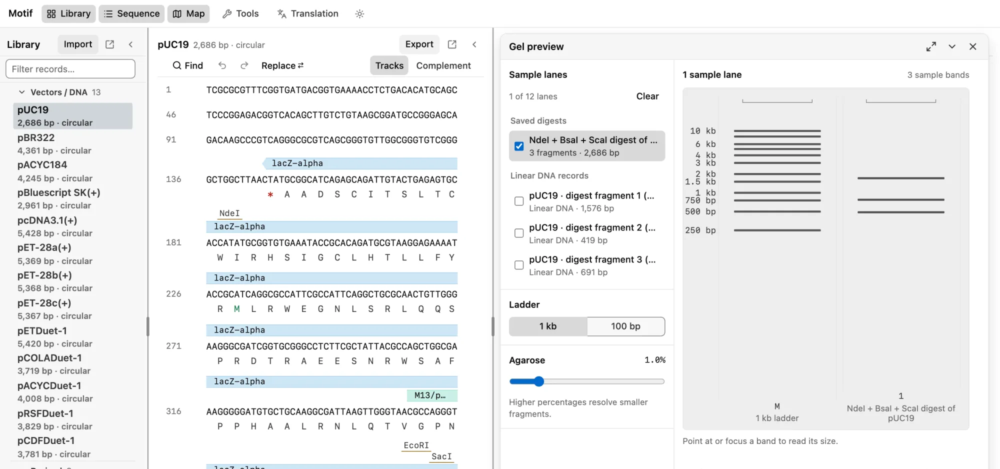
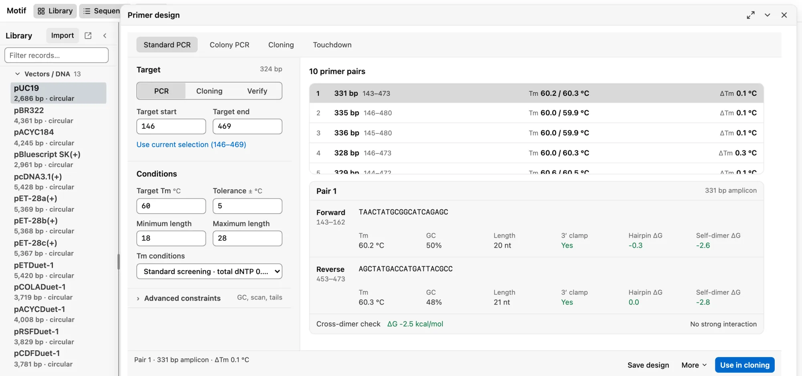
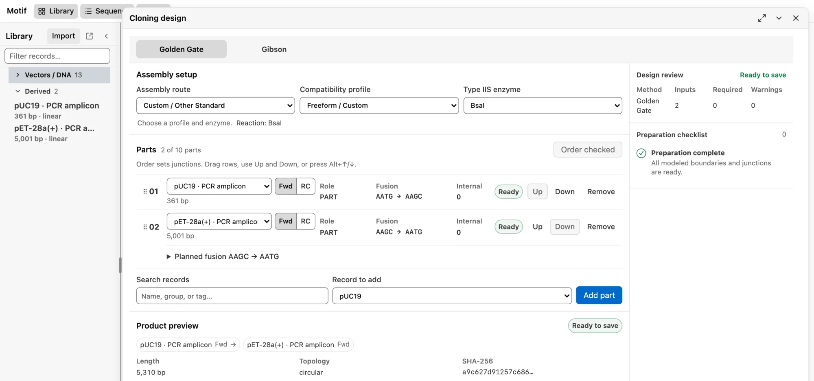
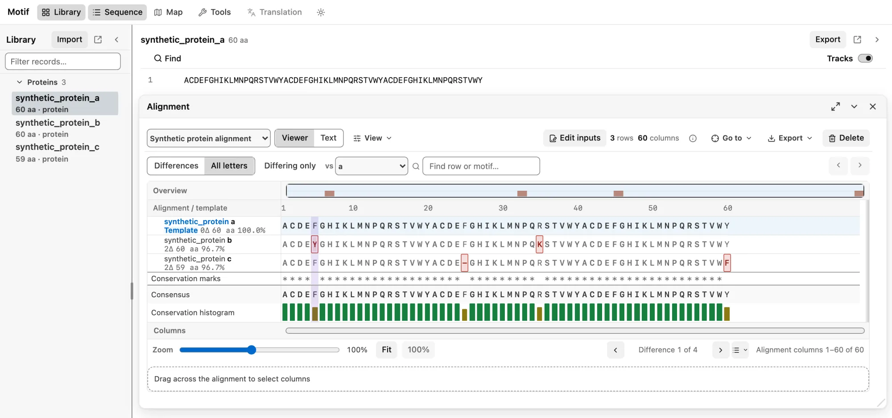
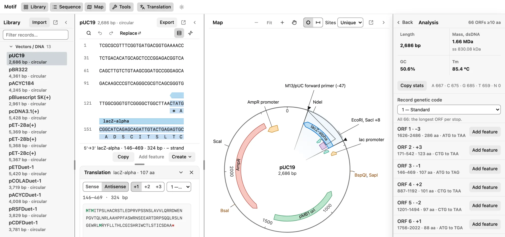

A molecular-biology workbench for you and your AI agent
Work on your sequences without leaving Codex or Claude Science. Motif opens in the pane beside the chat with the records your agent fetched or built, so you can check its work on a map. Claude Code, Gemini, or another agent that can run commands builds Motif as one HTML file that opens in any modern browser.
Paste into Claude Code, Gemini, or another agent that can run commands:
Set up Motif from https://github.com/jvogan/motif
Your agent
You: Open pUC19 in Motif so I can check its map and restriction sites.
Agent: pUC19 is open in Motif: 2,686 bp, circular, with its features and restriction sites on the map.
motif_open_workbench Opened in Motif
pUC19 · 2,686 bp

Why use Motif with your agent
-
Stay in Codex or Claude Science
In Codex, and in Claude Science on macOS, your agent opens its records in Motif in the pane beside the chat. You don't switch apps, download files, or paste sequences between tools.
-
Check your agent's work on a map
Open each record your agent fetched or built, read its features and restriction sites, and edit bases with undo. Every digest fragment, PCR product, and assembly links to its parent record and the step that made it.
-
Works with the agent you use
Claude Code and Gemini each built Motif from the one prompt on this page. The result is one HTML file that opens in any modern browser with no account, so you can send it to a colleague or use it with no agent.
-
Free and open source
Motif is free under the MIT license, needs no account or hosted service, and sends nothing anywhere by itself. Records you share with an AI app fall under that app's data terms.
Ask your agent, then work in Motif
Your agent opens the records, and you do the work in Motif. Each screenshot comes from the public build.
Linear map
Open pcDNA3.1(+) in Motif so I can check its features and restriction sites on a linear map.


Restriction digest
Open pUC19 in Motif. I want to cut it with NdeI, BsaI, and ScaI and preview the gel.


Primer design
Open pUC19 in Motif so I can design primers for lacZ-alpha and compare the ranked pairs.


Golden Gate
Build PCR amplicons from pUC19 and pET-28a(+), then open them in Motif so I can plan a BsaI Golden Gate assembly.


Protein alignment
Open the example alignment of three synthetic proteins in Motif so I can see where they differ.


Translation
Open pUC19 in Motif so I can translate lacZ-alpha and list the open reading frames.


Edit, analyze, and plan in one workbench
-
Maps
Pan and zoom circular and linear maps to read features and restriction sites.
-
Edit and annotate
Edit bases and undo changes. Add features, tags, and notes.
-
Digest
Predict restriction digests, save the fragments as records, and preview a gel.
-
Clone
Plan Gibson, Golden Gate, GoldenBraid, and ligation assemblies. Design primers and simulate PCR.
-
Align
Align 2 to 10 sequences of up to 3,000 residues each in your browser, or use the external runner with MAFFT, MUSCLE, or Clustal Omega installed on your computer.
-
Sanger traces
Open AB1 files to review the traces.
-
Translate and search
Find open reading frames and CRISPR guide candidates, translate with NCBI genetic codes, and search for motifs.
-
Save and share
Export FASTA, GenBank, workspace JSON, CSV, ZIP, or an HTML or Markdown report. Print to PDF. Share the workbench as one HTML file.
Find feature details in the capability reference.
See it in Claude Science
Claude Science fetches records and opens them in Motif in the pane beside the chat.
Get started
Any agent that can run commands on your computer can set Motif up from this prompt:
Set up Motif from https://github.com/jvogan/motif
The agent builds one HTML workbench file that you open in your browser. To open Motif beside the chat instead, use the Codex or Claude Science setup below.
Set it up yourself
-
In your browser
Build Motif with these commands, then open
preview/motif-artifact.html. You need Git and Node.js 22.13 or newer on 22.x, or Node.js 24 or newer.
Browser build instructionsgit clone https://github.com/jvogan/motif.git cd motif npm ci --ignore-scripts npm run security:policy npm run security:lifecycle npm run preview:motif -
In Codex
Install the local plugin to open Motif inside Codex. Install the skills-only plugin to have Codex fill workbench files with the records it prepares.
-
In Claude Science
On macOS, set up the local connector to open Motif in the pane beside the chat, loaded with the records Claude Science fetches.
Claude Science setup
The Codex local plugin and the Claude Science connector run the same local MCP server. Its tool motif_open_workbench opens the interactive workbench, and its tool motif_create_workbench_artifact returns a portable HTML workbench.